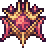

Recent Updates
The most recent update is v1.4.2.2, with only a few bugfixes and official Steam Workshop support. Fantastic news for mod creators! Previously, update 1.4.1, was rolled out. This updated introduced numerous winning Vanity Sets from the Journey's End Vanity Design Contest. A new NPC and her building was also added, the Princess. She sells items related to her profession. New achievements were also rolled out, and new items were added, with a focus on early/pre-Hardmode Summoner options. An overhaul on the Vanity system was also introduced. Other than these, QoL changes and balance changes were introduced, alongside bug fixes., Before that update was, as you may already know, was the Journey's End update. This update introduced a plethora of things to do, work around and play with. It added new features like Journey Mode and Master Mode, new bosses, the Bestiary, Golfing, Windy Day weather, an expansion on the town system, a luck system, additions to biomes, music, improvements on the menu systems and UI, additions to fishing, equipment, enemies, and a whole lot more. Originally introduced back in 2011, it released for Terraria's 9th anniversary update. It instead released on May 16, 2020. This is the last major update Terraria will experience. But not to worry! We will keep tabs on all the different kinds of mods that Terraria has, so keep a keen eye out for those. It has been a blast to experience Terraria and its final updates, and we hope you find enjoyment still in this wonderful little game for years to come.Mod News
One of the largest and most popular mods out there for Terraria,  The Calamity Mod is a large content mod for Terraria which adds many hours of endgame content and dozens of enemies and bosses dispersed throughout the vanilla game's progression. The Calamity Mod also features several harder difficulty modes, five new biomes and new structures, a new class, a new leveling mechanic, more than thirty new songs, over fifty recipes for previously uncraftable vanilla items and other assorted changes to vanilla gameplay.QUESTIONS AND ANSWERS